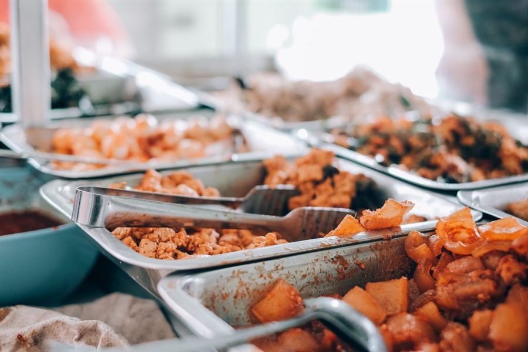

Short answer: Bayou Fork Kitchen offers holiday catering for Houston office parties, family gatherings, church events and end-of-year celebrations. We build every quote around your date, guest count, venue, menu, service style and budget, with catering pickup, drop-off, staffed buffet and plated service available.
Our Fondren Road kitchen serves Houston, Manvel, Pearland, Missouri City and Sugar Land. If you already know your event details, request a holiday catering quote. If you are still planning, use this guide to choose a menu and service style first.
Holiday events we can help you feed
- Office holiday parties: team lunches, employee appreciation meals and end-of-year celebrations at the workplace or an outside venue.
- Family gatherings: shareable food for Thanksgiving-season dinners, Christmas gatherings, reunions and relaxed meals at home.
- Church and community events: menus that can be dropped off, arranged as a buffet or served by staff.
- Client and vendor appreciation: a Southern comfort spread for customers, partners or a year-end open house.
- New Year celebrations: a custom meal for a private party, organization or workplace.
Holiday availability is date-specific. Requesting a quote does not reserve the date; the catering team will confirm availability and details with you.
Build a Cajun and Creole holiday menu
Start with the way your guests will eat, then choose dishes that make sense together. Our Cajun catering menu guide includes planning ideas for smaller gatherings and larger crowds. Popular directions include:
- Louisiana comfort: gumbo or crawfish étouffée with dirty rice and Southern sides.
- Party-friendly variety: Sweet Heat Wings, Mardi Gras Pasta, fried seafood and family meal platters.
- Southern holiday table: macaroni and cheese, greens, candied yams, green beans, mashed potatoes and baked beans alongside your mains.
- Mixed menu: one Louisiana classic, one familiar crowd-pleaser and multiple sides so guests can build their own plates.
These are planning ideas, not fixed packages or guaranteed portions. Browse the full restaurant menu, then tell us which flavors you want represented. The catering team will recommend quantities and prepare a custom quote.
Choose the right holiday service style
- Pick-up catering: collect the order from Bayou Fork Kitchen and handle setup and serving yourself.
- Catering drop-off: have the food brought to your event address without staffed meal service.
- Full-service buffet: staff serves a buffet line for your guests.
- Full-service plated: servers bring prepared plates to the tables.
The right option depends on the venue, budget, schedule and guest experience you want. Our guide to catering a private event in Houston explains what to have ready before you contact us.
What guests say about Bayou Fork
As of October 22, 2026, Bayou Fork Kitchen is rated 5.0 on Google across 56 reviews. Recent five-star feedback includes:
“Catered food and everything was great.”
Five-star Google review
“Food was perfectly cooked and well seasoned!”
Five-star Google review
“The hospitality is great and the food is even better.”
Five-star Google review
Review count and rating were checked on the restaurant’s Google Business Profile on October 22, 2026.
When to order holiday catering
Earlier is better for popular dates. Larger orders generally need at least one day’s notice, while staffed buffets, plated service and events with venue coordination need more planning time. Contact us as soon as your date, approximate headcount and location are known so we can confirm availability.
Holiday operating hours and catering availability can differ from regular restaurant hours. Do not rely on regular hours alone when planning an event; wait for the catering team to confirm your date and serving time.
What to include in your quote request
- Event date and start or serving time.
- Guest count and event type.
- Venue name and complete event address.
- Pick-up, drop-off, staffed buffet or plated service.
- Estimated budget and preferred menu items.
- Dietary restrictions and food allergies. Pork is used in our kitchen.
These details let us prepare a useful quote without a chain of follow-up questions. Send your holiday catering request or call (832) 992-7335.
Holiday catering FAQs
Does Bayou Fork Kitchen cater holiday parties in Houston?
Yes. We cater office holiday parties, family gatherings and other seasonal events across Houston, Manvel, Pearland, Missouri City and Sugar Land. Every quote is built around the event.
What holiday catering service styles are available?
Choose catering pickup, catering drop-off, a full-service buffet with staff serving the line, or full-service plated meals with servers bringing plates to the tables. Availability depends on the date, venue and event details.
How early should I order holiday catering?
The sooner the better. Larger orders generally need at least one day’s notice, while staffed buffets, plated service and popular holiday dates need more planning time.
What information is needed for a quote?
Send the event date, serving time, guest count, event type, venue address, service style, estimated budget, preferred dishes and any dietary restrictions or allergies.